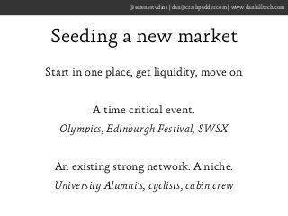

Dan Hill is the Director of Product for AirBnB. He got there by starting Crashpadder, the same idea at the same time as AirBnB (well, 5 days before them), but in Europe. And later sold it to them.
When founders ask me about how to get their marketplace model off the ground, I always refer to Dan. He had a clear way to do this from the beginning, back in London.
His slides from a London meetup are a great overview of his thinking, with some examples to get you thinking for yourself. But for a structured explanation, I refer to people to archive.org to dredge up his old blog.
To save us time, I thought I’d quote the whole thing here for easier reference:
Some basics.
{kind=link}
Whilst others may have articulated this elsewhere, I’ve found there are essentially two distinct types of marketplace: ‘local’ and ‘non-local’. In a local marketplace, the supply and demand are necessarily both consumed within the same geography (city, town, neighbourhood); examples include TaskRabbit - the people doing the tasks live near those needing tasks done, Ecomodo - people borrow tools etc. off people near them; Kinderfee - people book a sitter who lives near them. Non-local marketplaces are the opposite; examples include Crashpadder/Airbnb - people use the service because they need accommodation elsewhere; Gidsy - people book because they don’t know the area. Some marketplaces operate irrespective of course: eBay - people either post or collect; MinuteBox - the value transfer takes place entirely online.
The distinction is important. The ways you seed, grow and expand each is different. At Crashpadder we must seed a new geography in a highly localised way (London, say), and then get demand from everywhere/anywhere BUT London. Conversely, TaskRabbit would want to target both sides of the marketplace in a highly dense geography.
Next, you need availability & liquidity in your marketplace. This is the hard bit, especially early on in a market. We need available hosts that can be booked, and guests that are making bookings. The experience of a user, be they supply or demand, is only partly a function of your service; most of the experience is determined by the right volume of their opposite.
The key therefore to understand in your business is that your job is only to facilitate value transfer, not create the value. You charge money for this service. The more value you transfer, the more money you make.
So, understand the product you sell. eBay doesn’t sell second-hand goods, TaskRabbit doesn’t sell tasks and we don’t sell rooms. We sell trust. Our hosts sell rooms.
Chickens and eggs.
{kind=link}
Do I need a chicken or an egg? Should we get supply first, or demand. The answer is both. Success is being able to ramp up both sides proportionally. We’ve found it best to start in one geography and achieve scalable liquidity then rinse and repeat.

Two techniques we’ve found powerful:
A time critical event - find a reason why both sides of your marketplace are going to have to come together at the same point, giving you that initial liquidity. For example, the Olympics or Edinburgh Festival are great for us, as both sides concentrate their expectations and usage around the same window.
An existing strong network, a niche - the trick here is to find a group of users on both sides who are willing to put the extra effort and time into waiting for full liquidity. For eBay, this might be stamp collectors - they’re willing to come back and try again until they get that one perfect stamp. Someone buying a HiFi would simply go somewhere else that does have liquidity (a high-street store).
Types of value
{kind=link}
Another important distinction between types of marketplace is between the types of value being sold: lasting vs one-time inventory. Lasting inventory you can reuse multiple times per listing, for example our rooms can be booked multiple times ad infinitum, baring unavailable periods. One-time inventory, for example goods on eBay, and only be consumed once, then you need to go back to square one and get more inventory. I think a large part of the success of the P2P accommodation model is due to the high value-to-supplier ratio compared with one-time inventory models.
Marketplace Half-life
This is something we began modelling a while ago, and has proved very powerful in predicting future behaviour.
The half-life of your (lasting) inventory is the time it takes for it to half in value.
{kind=link}
In our case, this is the time it takes for the likelihood of a new booking request to be accepted. If a host gets a booking every week (say), then they’re engaged, their availability is up-to-date, and we know we have a reliable method of contacting them. After a period of time, that same probability drops as they’ve not been engaged so not updated their availability, may have changed email address, may have gone elsewhere for bookings, and so on.
Understanding your half-life allows you to balance the distribution of new bookings/guests effectively between first time users and repeat users. Each host has their own sweet-spot for bookings (every week, two weekends a month, every two months etc.), but when you hit it they’re yours.
Competition and Virality
There’s an inherent competition on either side of a marketplace. Either hosts are competing to get the (best) guests, or guests are competing to book the (best) hosts. If you can manage the level of competition on either side, you can cause both side to up their game. If our hosts see they’re moving down search results (but are still roughly within 1/2 half-life cycles) they’ll look at the new features and options to get them back up: maybe more photos, better descriptions or tagging, updating their calendar etc. Guests to likewise - they’ll provide more useful information about themselves, respond to messages quickly etc.
{kind=link}
But. The side that’s competing generally won’t go viral or want to share your product or platform. A host that’s feeling a bit of competition to get bookings won’t want to tell their friends (who live in the same area, right?) about your service because that will only increase the competition they’re already facing. If they’re making more money that they know what to do with, they will. (Or if they’re essentially happily saturated).
You also don’t want competition on price. If you push competition on the supply side to far, you might end up with people cutting prices. At that point they’re probably done with your service anyway and your marketplace is essentially broken (there’s NO demand), but you also earn less money. If the supply side starts lowering prices, look hard at what’s going on.
Marketplaces are cool
{kind=link}
We’ve been running a marketplace for 3 years now. We were one of the first into the P2P accommodation space, and it’s a brilliant model. The high network effect (Metcalfe’s law) makes switching expensive and thus your supply defensible. The more reviews a host has, the more reviews they get, and the bigger the drop from starting again elsewhere. And what’s really nice is building a business on existing, underused, value. We’re not building hotels, but selling shovels. We allow others to get more value from the world.
Dan was recently on the Seedcamp podcast, talking about his experience.
You can show Dan your appreciation on Twitter and follow his latest writing on Medium.
Can you relate to the stories we told here? How is your experience different? We’d love to hear from you. Your questions and comments are what will help us make better lessons in the future.